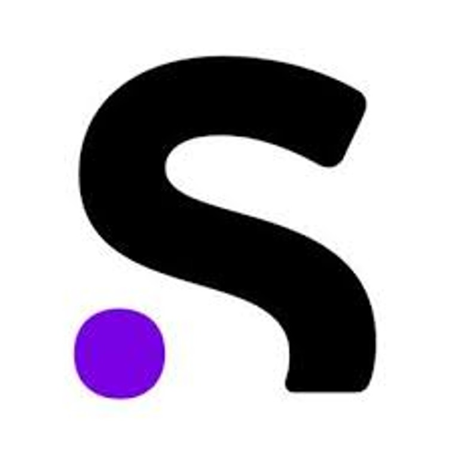
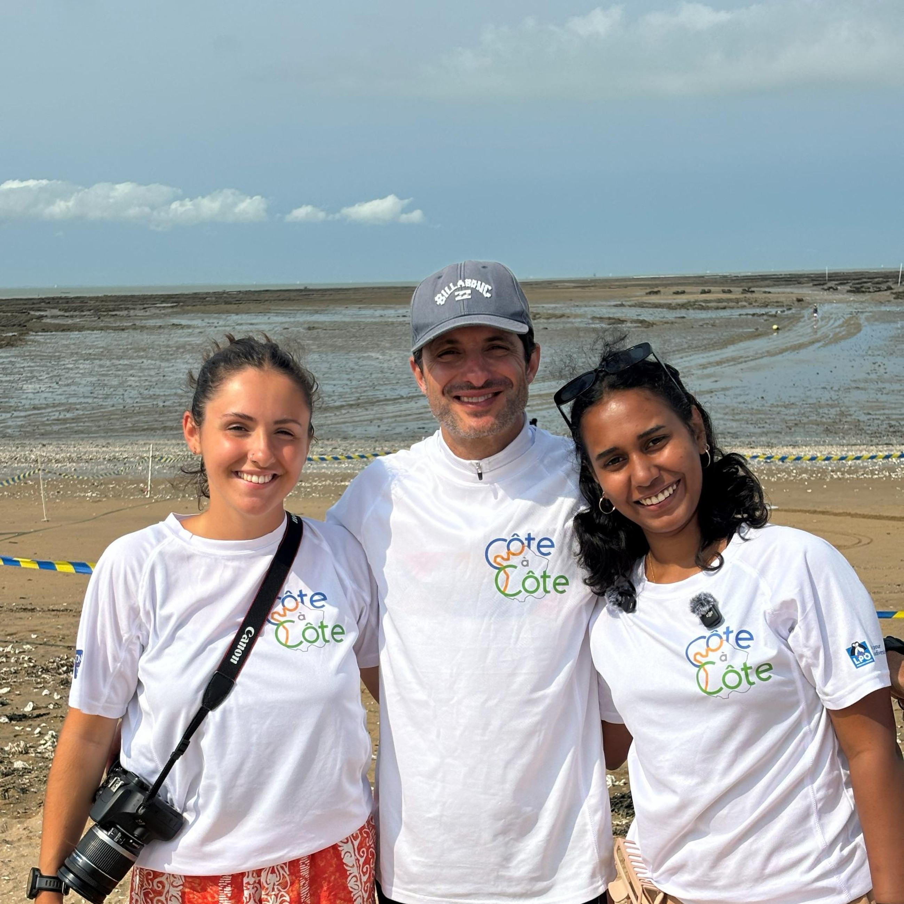
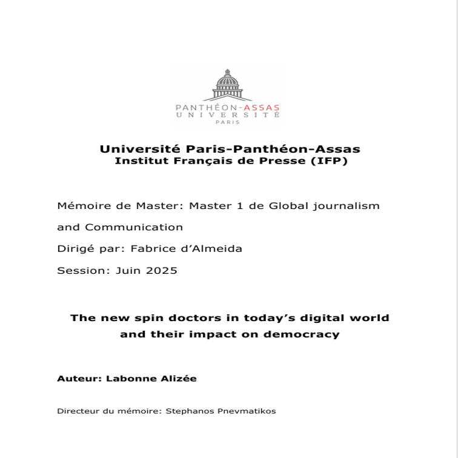
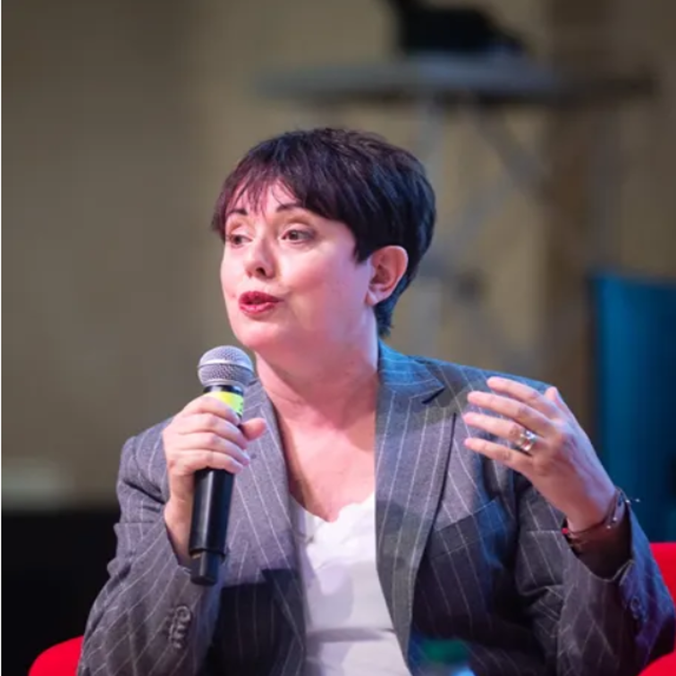
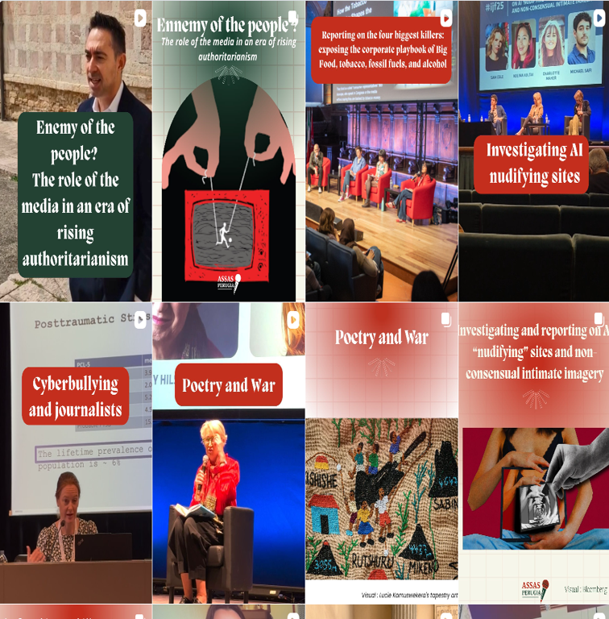
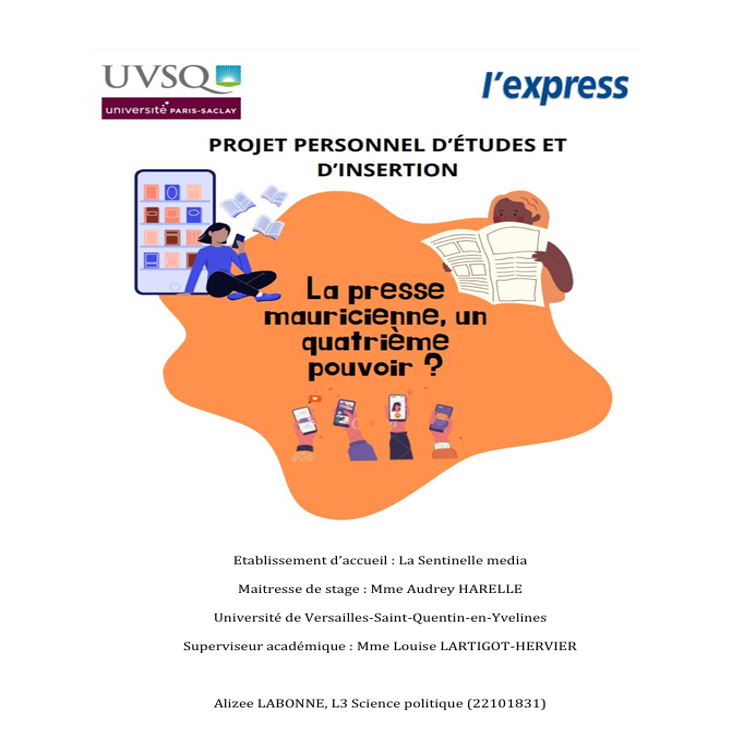
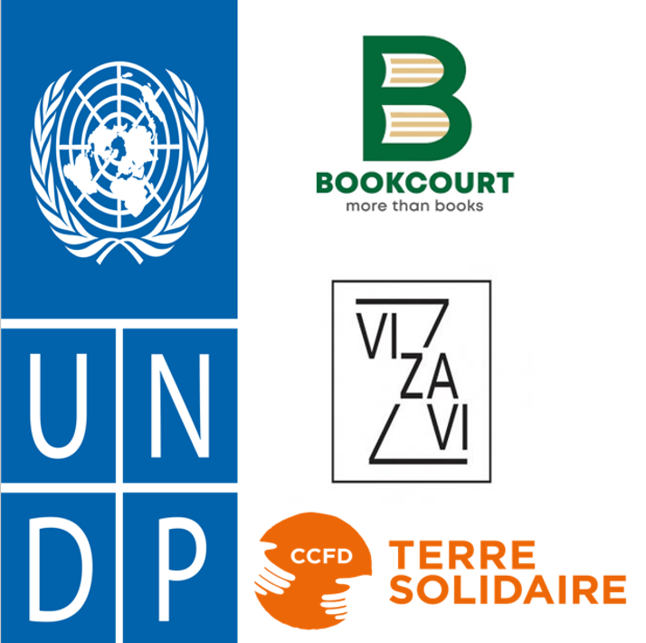

Education & Training
MBA IN LUXURY COMMUNICATION & STRATEGIES
EFAP - École des nouveaux métiers de la communication, Paris, France
MASTER'S DEGREE IN GLOBAL JOURNALISM AND COMMUNICATION
Paris II Panthéon Assas University, France
BACHELOR'S DEGREE IN LAW, ECONOMY, MANAGEMENT AND POLITICAL SCIENCE
Saint Quentin en Yvelines University, France
INTERNATIONAL FRENCH BACCALAUREATE (OIB)
Lycée des Mascareignes, Mauritius
Experience
Communication Specialist Assistant (Apprenticeship)
Groupe SII, Paris
- Driving internal communications and boosting employee engagement.
- Managing end-of-year events and various internal corporate initiatives.
- Coordinating social media strategies and digital content.
Global Internal Communications (Apprenticeship)
Sanofi, Paris
- Led internal communication initiatives and supported external communications.
- Developed and maintained the global editorial calendar.
- Organized team workflows and collaborated across diverse departments.
- Produced and distributed the global newsletter "Connecting the Dots".
Project Manager (Internship)
NGO “Côte à Côte”, France
- Managed press relations, partnerships, and sponsorships.
- Coordinated external communication across social media and the website, and internal communication through the newsletter.
- Supported event planning and on-site coordination.
Coverage of the International Journalism Festival
Perugia, Italy
- On-site coverage of the International Journalism Festival through interviews, reports, and video features.
- Curated and scheduled Instagram account (@assasperugia).
- Edited short-form videos and reels for social media platforms.
Seller at Bookcourt
Bookcourt, Mauritius
- Managed sales for a large editorial retail space.
- Delivered high-quality customer service and maintained team collaboration.
Internship at UNDP
Port-Louis, Mauritius
- Attended meetings and technical discussions on the future of developing countries.
- Drafted diplomatic and neutral briefing notes and official documents.
Internship at La Sentinelle Media, l'Express
Port-Louis, Mauritius
- Conducted field reporting.
- Wrote and published news articles.
- Collaborated with the editorial team in daily newsroom operations.
- Carried out a student project on the relationship between media and politics
Internship at VIZAVI Publishing House
Éditions Vizavi, Mauritius
- Coordinated author relations and supported editorial outreach initiatives.
My Editorial Portfolio

BASALT - Master 2 Thesis Project
A premium independent magazine exploring Mauritian identity. Managed the complete editorial creation, copywriting, and layout design.
Read an extract
Sanofi - Internal Communications
Connecting the Dots internal newsletter (2025-2026).

Association Côte à Côte (2025)
- Launched an online fundraising campaign on Ulule.
- Created and managed the association’s website.
- Drafted press releases and newsletters.
- Managed the association’s social media platforms.
- Designed event one-pagers and promotional materials.

Master 1 Thesis (2025)
Title: Spin Doctors in the Digital Age: The Democratic Impact of Their New Digital Tools.
Thesis conducted as part of the Master’s in Global Journalism and Communication.

Journalistic Profile - Annette Young
Article: "In the Margins, She Found the Headlines"- Profile of journalist Annette Young, written following the Perugia International Journalism Festival.
Read the Article
International Journalism Festival in Perugia (April 2025)
On-site coverage of the International Journalism Festival through interviews, reports, and video features.
Led the artistic direction of a dedicated Instagram account.

Student Project (2024)
Analytical report on the relationship between media, public opinion, and the political sphere. (Title: "The Mauritian Press: A Fourth Power?").
See the Document (PDF)Press Articles - La Sentinelle Media, l’Express (2023)
Wrote multiple news articles.
Trajet Maurice-Rodrigues Écosystème Néphile
Other Experiences
- Created Instagram content, edited reels, and developed visual storytelling materials.
- Drafted diplomatic and neutral communications for the United Nations Development Programme (UNDP).
- Managed an editorial retail space (Bookcourt, Éditions Vizavi).
- Volunteered on gender-based violence awareness initiatives (CCFT Terre Solidaire).
Core Skills & Interests
Core Skills
- Adaptable and versatile communicator, effective both independently and in team environments
- Creative and curious, with a strong sense of storytelling and audience engagement
- Organised, results-driven, with an eye for clarity and impact in content production
- Proficient in Microsoft Office, Canva, Adobe Creative Suite
- Experienced with WordPress, basic HTML/CSS
- Familiar with AI tools (ChatGPT, Claude, DeepSeek) for content and research support
Languages
- French: Native
- English: C1
- Spanish: B1
Interests & Activities
- Volunteering on gender equality and social awareness initiatives (CCFT Terre Solidaire).
- Reading on global affairs and contemporary issues.
- Creative pursuits enhancing visual storytelling skills.
- Keen follower of current events and political communication trends.